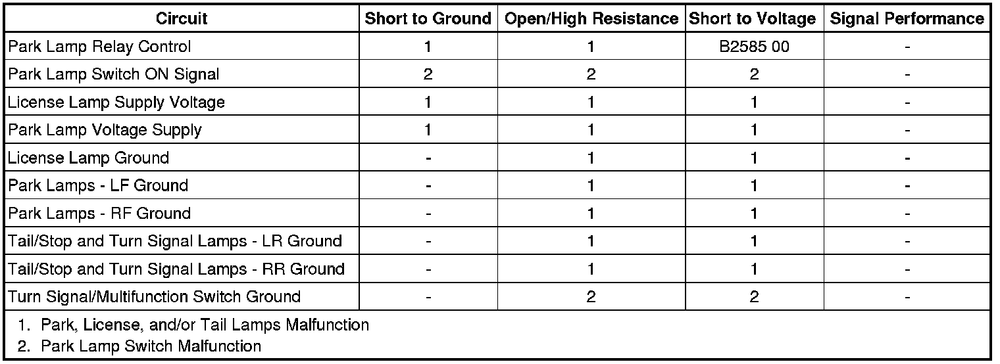

Park, License, and/or Tail Lamps Malfunction
Park, License, and/or Tail Lamps Malfunction
Diagnostic Instructions
* Perform the Diagnostic System Check - Vehicle (Initial Inspection and Diagnostic Overview) prior to using this diagnostic procedure.
* Review Strategy Based Diagnosis (Initial Inspection and Diagnostic Overview) for an overview of the diagnostic approach.
* Diagnostic Procedure Instructions (Initial Inspection and Diagnostic Overview) provides an overview of each diagnostic category.
Diagnostic Fault Information

Circuit/System Description
Battery positive voltage is applied at all times to both the coil and switched sides of the PARK LAMP relay. Ground is applied from G200 to the multifunction switch at all times. When the headlamp switch is placed in either the HEAD or PARK position, ground is applied to the park lamp relay control circuit. This energizes the PARK LAMP relay and applies battery positive voltage to all of the park, tail, license, and marker lamps.
Reference Information
Schematic Reference
Exterior Lights Schematics (Exterior Lights Schematics)
Connector End View Reference
Component Connector End Views (Connector Views)
Description and Operation
Exterior Lighting Systems Description and Operation (Exterior Lighting Systems Description and Operation)
Electrical Information Reference
* Circuit Testing (Component Tests and General Diagnostics)
* Connector Repairs (Component Tests and General Diagnostics)
* Testing for Intermittent Conditions and Poor Connections (Component Tests and General Diagnostics)
* Wiring Repairs (Component Tests and General Diagnostics)
Scan Tool Reference
Control Module References (Programming and Relearning)
Circuit/System Verification
Ignition ON, observe the scan tool park lamp switch parameter while cycling the park lamp switch between the ON and OFF positions. The readings should toggle between ACTIVE and INACTIVE.
If the readings do not change between the commanded states, refer to Park Lamp Switch Malfunction.
Circuit/System Testing
Park Lamp Switch Malfunction
1. Ignition OFF, disconnect the X1 harness connector at the turn signal/multifunction switch.
2. Ignition OFF, verify that a test lamp illuminates between B+ and the ground circuit terminal K.
• If the test lamp does not illuminate, test the ground circuit for an open/high resistance.
3. Ignition ON, verify the scan tool park lamp switch parameter is INACTIVE.
• If not the specified value, test the signal circuit terminal M for a short to ground. If the circuit tests normal, replace the BCM.
4. Install a 3A fused jumper wire between the signal circuit terminal M and ground. Verify the scan tool park lamp switch parameter is ACTIVE.
• If not the specified value, test the signal circuit for a short to voltage or an open/high resistance. If the circuit tests normal, replace the BCM.
5. If all circuits test normal, test or replace the turn signal multifunction switch.
Park, License, and/or Tail Lamps Malfunction
1. Ignition OFF, remove the fuse of the inoperative park/marker lamps and inspect.
• If the fuse is OPEN, test the voltage supply circuit of the blown fuse for a short to ground.
2. Ignition OFF, disconnect the park lamp relay.
3. Ignition ON, verify that a test lamp does not illuminate between the control circuit terminal R23 and ground.
• If the test lamp illuminates, test the control circuit for a short to voltage.
4. Verify that a test lamp illuminates between the B+ circuit terminal R25 and ground.
• If the test lamp does not illuminate, test the B+ circuit for a short to ground or an open/high resistance. If the circuit tests normal and the B+ circuit fuse is open, test the control circuit terminal R23 for a short to ground. If the circuit tests normal, test or replace the park lamp relay.
5. Verify that a test lamp illuminates between the B+ circuit terminal R22 and ground.
• If the test lamp does not illuminate, test the B+ circuit for an open/high resistance.
6. Disconnect the harness connector at the inoperative park/marker lamp.
7. Ignition OFF, exterior lamps OFF, test for less than 5.0 ohms of resistance between the inoperative park/marker lamp ground circuit and ground
• If greater than the specified range, test the ground circuit for an open/high resistance.
8. Connect the harness connector at the inoperative park/marker lamp.
9. Connect a 10A fused jumper wire between the B+ circuit terminal R22 and the control circuit terminal R23. Verify the park/marker lamps are activated.
• If the park lamps do not activate, test the control circuit for an open/high resistance. If the circuit tests normal, test or replace the inoperative park lamp.
10. Connect a test lamp between the B+ circuit terminal R25 and the control circuit terminal R21.
11. Command the park lamps ON and OFF with a scan tool. The test lamp should turn ON and OFF when changing between the commanded states.
• If the test lamp is always ON, test the control circuit for a short to ground. If the circuit tests normal, replace the BCM.
• If the test lamp is always OFF, test the control circuit for a short to voltage or an open/high resistance. If the circuit tests normal, replace the BCM.
12. If all circuits test normal, test or replace the park lamp relay.
Repair Instructions
Perform the Diagnostic Repair Verification (Verification Tests) after completing the diagnostic procedure.
* Headlamp Replacement (Service and Repair)
* Rear License Lamp Replacement (Service and Repair)
* Tail Lamp Replacement (Service and Repair)
* Relay Replacement (Attached to Wire Harness) (Relay Replacement (Attached to Wire Harness))Relay Replacement (Within an Electrical Center) (Relay Replacement (Within an Electrical Center))
* Turn Signal Multifunction Switch Replacement (Turn Signal Multifunction Switch Replacement)
* Front Side Marker Lamp Bulb Replacement (Service and Repair)
* Control Module References (Programming and Relearning) for BCM replacement, setup, and programming